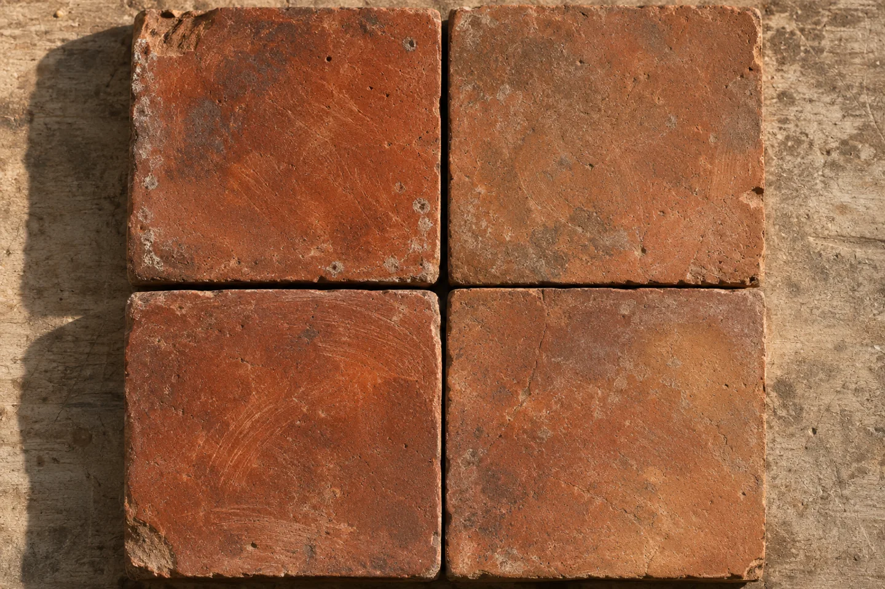

COUNTERFORM CF–024Inspect reclaimed materials before reserving a lot.
Independent UI/UX design
I design websites and mobile apps that help people make decisions with confidence.
View selected workProject inquiries
Tell me what you’re building, who it’s for, and what you want to get right. We can agree on a channel for feedback and discuss the screens, flows, and timing.
GitHub inquiries are public. Share a short introduction there and keep project details for a private conversation.